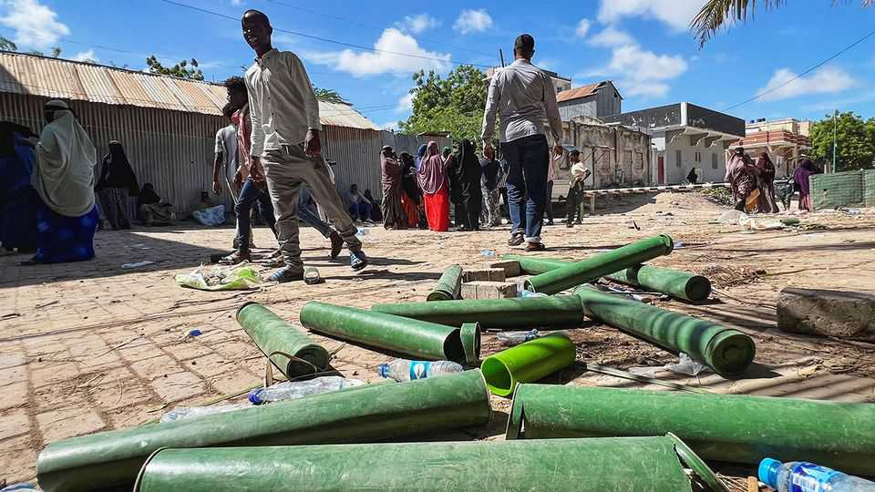

Fighting in Mogadishu risks making a weak state weaker
A presidential power grab has convulsed Somali politics
June 11th 2026

Cranes dot the skyline of Mogadishu, where in recent years construction has boomed instead of bombs. There was talk of Somalia’s capital “rising from the ashes”. But on June 4th it seemed like the bad old days were back, as heavy gunfire erupted across town. In a northern district, a group of young men ran for cover behind a newly built apartment. An rpg had punched a gaping hole through its gleaming roof.
Bullets flew because ballots flopped. In 2022 Hassan Sheikh Mohamud was sworn in as Somalia’s president. His four-year term expired on May 15th, but he has refused to step down. In March Mr Mohamud’s government rammed a last-minute constitutional overhaul through parliament, extending his term by a year. Yet much of the opposition boycotted the vote and regards the reforms as an illegitimate power grab. The fighting in Mogadishu pitted soldiers loyal to Mr Mohamud against militias controlled by two prominent opposition figures. The un says at least nine people were killed and hundreds displaced. The government claimed to have “restored order” on June 5th, but the situation remains tense.
There is more than a hint of déjà vu in this. Mr Mohamud’s predecessor in Villa Somalia, the presidential palace, also tried to extend his term. Somalia-watchers speak wryly of “Villawood”: a recurring soap opera staged every election cycle by the country’s politicians. The plot is familiar: as his term draws to a close, the president says he needs more time to fix Somalia once and for all. His rivals denounce him as a would-be dictator and rally militias to thwart his nefarious plans. The melodrama usually ends with an improvised bargain, lubricated by a dollop of donor funds. But not before a short gunfight in the capital.
Yet the latest Villawood blockbuster could go dangerously off-script. Since 2012 Somali presidents have been elected indirectly by clan elders. Mr Mohamud’s reforms mandate the introduction of one-person-one-vote elections. The government argues, rightly, that the status quo is undemocratic; a shift to universal suffrage is long overdue. But the commission that is to oversee the election is in effect under Mr Mohamud’s thumb. A large portion of Somalia’s political class, including two of its six federal member-states (excluding Somaliland), has refused to participate in the vote for that reason.
Both sides seem loth to make concessions. “We can discuss the technical details,” says a minister in Mr Mohamud’s government. “But we cannot compromise the right of the Somali people to choose their leaders directly.” “How can you [negotiate] with someone who wanted to spill your blood?” counters a source close to an opposition figure involved in the recent clashes. Western donors might once have helped broker a deal. But these days they are cutting funding and losing leverage. Talks convened by Britain and America in May collapsed without an agreement.
More recently Turkey has been trying to mediate. Yet some opposition figures accuse it of being partial to Mr Mohamud. Under his watch it has dramatically expanded its military and commercial footprint in Somalia. Some observers worry that if he feels he has Turkish backing, Mr Mohamud may seek confrontation rather than compromise. In March the president reportedly used Turkish drones and Turkish-trained commandos to unseat a recalcitrant regional governor. “If I have a single bullet left,” warned an opposition leader on June 3rd, “any man that fires at me, I’ll fire back at him.”
Even if serious violence is avoided, the stand-off risks further enfeebling an already wobbly state. The opposition may organise its own elections, fracturing the country between parallel administrations and making it even harder to beat back a resurgent al-Shabab, a jihadist group that controls much of the countryside. When Mr Mohamud took office he promised to unite and calm Somalia. He may instead be hastening its fragmentation. ■
Sign up to the Analysing Africa, a weekly newsletter that keeps you in the loop about the world’s youngest—and least understood—continent.